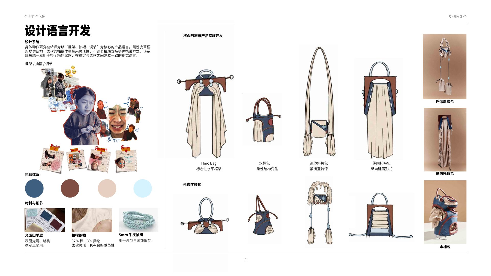
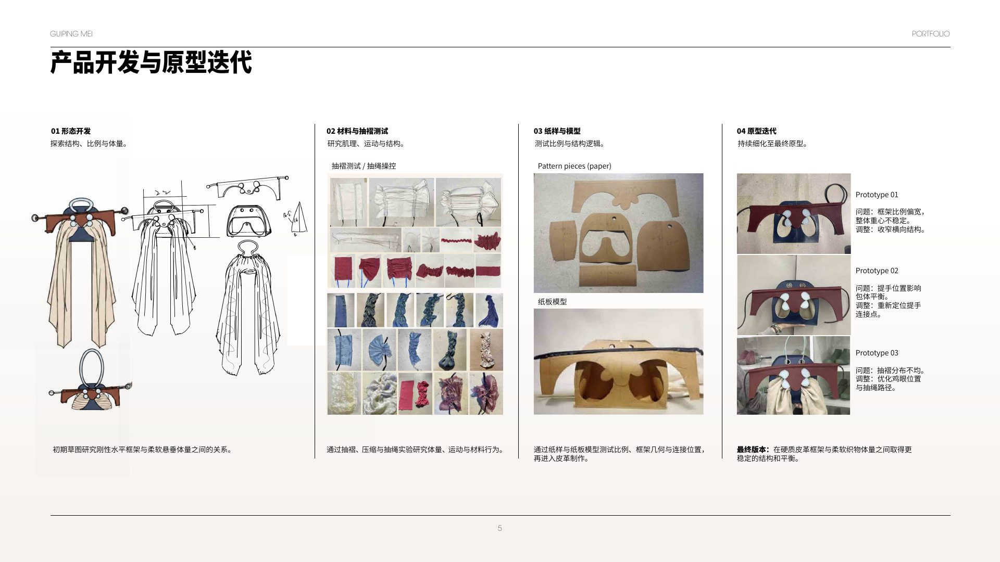
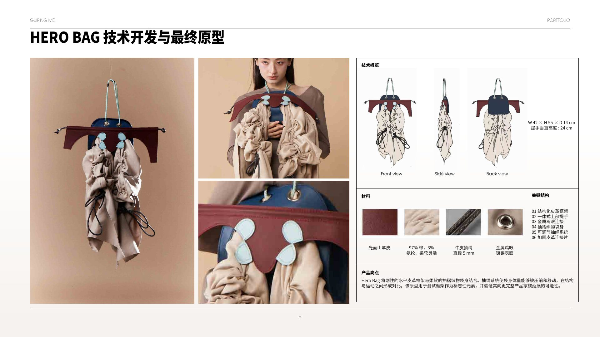
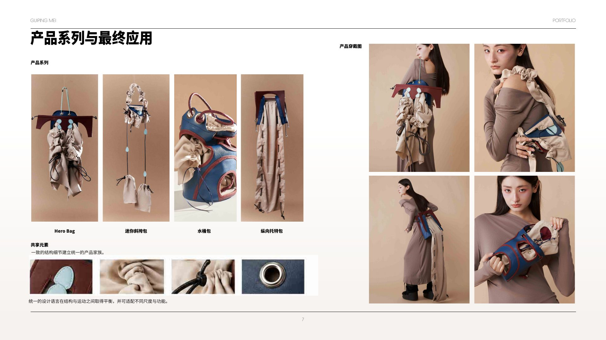
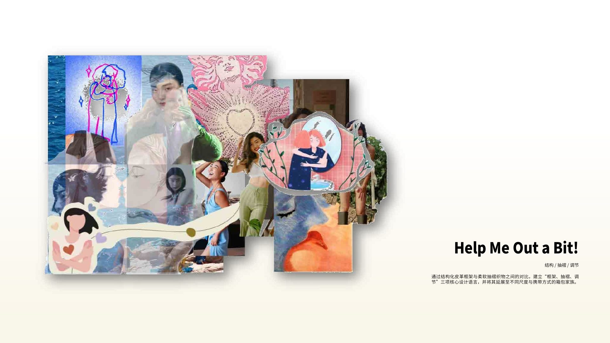

Help Me Out A Little!
Soft emotion held by a precise frame.
项目将面部表情中的收缩、拉扯与垂落，转译为结构皮革框架和柔软聚拢织物之间的对话。
A modular design language — frame, gathering and adjustability — allows one emotional gesture to become a coherent family of bags.
SYSTEM4 product types
KEY OBJECTHero Bag
METHODPrototype iteration
01 / Design language
Expression becomes hardware, seam and volume.
框架决定轮廓，褶皱保存动作，调节系统让使用者参与造型。颜色与材料从“表情”出发，却最终落在可生产的产品逻辑上。
Emotion → construction

02 / Product development
Test the gesture until it becomes a product.
草图、材料实验、纸样和多轮样包连续推进。页面把失败与修正保留下来，让完成品看起来不是偶然结果，而是可复述的设计决定。
Sketch · sample · correction · final

Hero BagStructured leather frame · Gathered textile body · Adjustable closures
03 / Product family
One rule, four personalities.
Hero Bag、bucket bag、mini crossbody 与 vertical tote 共用结构语汇，但保持不同容量与穿戴方式，形成完整系列。
System thinking / Final application

A bag family built from a single emotional gesture — made repeatable through product logic.
Next: Infinite Loop →